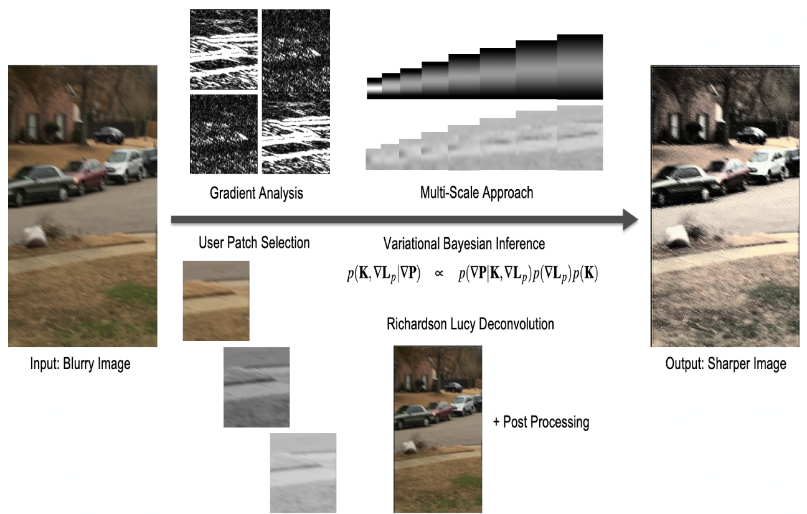
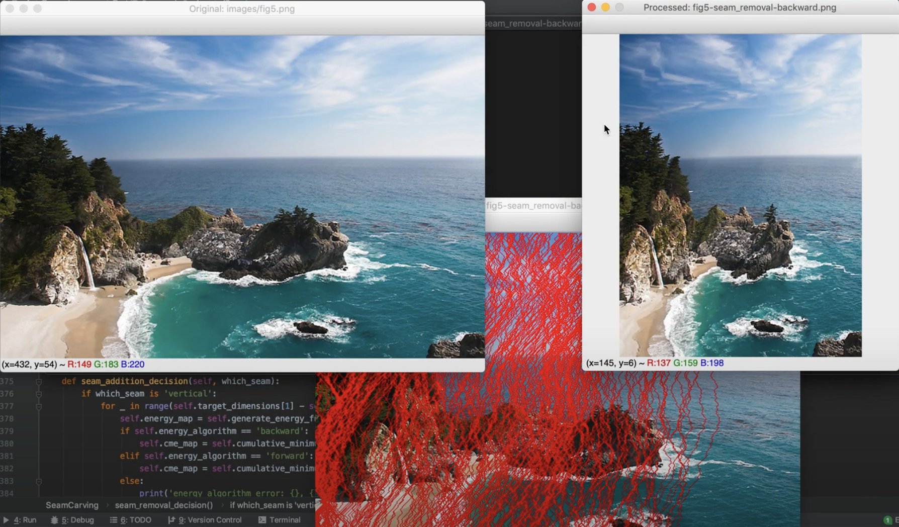

Hi! I'm a Master's student in Computer Science, specializing in Machine Learning at the Georgia Institute of Technology. I'm currently a Graduate Research Assistant at the Georgia Tech Research Institute in the Methods & Analysis Development Branch, working on an open source RDF framework for contructing knowledge graphs and performing machine learning and numerical optimization on semantic web technologies.
Before coming to Georgia Tech, I worked as an ML Engineer at AT&T Labs where I developed natural language and vision models to solve various problems. I also developed backend infrastructure and full stack applications to deliver and serve models reliably in production.
I earned my Bachelor's degree in Computer Engineering from Purdue University, where I focused on the areas of operating systems and cloud computing for applications within embedded microcontrollers and low power devices.
In my free time, I enjoy powerlifting and playing the classical guitar. My biggest creative outlet is video editing. To me, every frame and musical beat is important for beautiful story telling.
I'm currently looking for a full-time role starting June 2021!
Interests:
Systems for Machine Learning
High Performance Computing
Machine Learning
Data Science and Analytics
Databases and Knowledge Graphs
My resume is available here. Feel free to reach out to me at msyed32@gatech.edu!
|
|
Autonomous Driving Simulation using Deep Reinforcement LearningReplicated a method of autonomous steering in a race car game using supervised imitation learning, reward induction, and reinforcement learning with a double Q learning network (DDQN) Presentation Paper |

|
MoReco: A Tag-Based Movie Recommendation SystemDeveloped a recommender engine using cosine similarity that displays movies based on user selected tags on a web interface created in D3.js Code Paper |
|

|
Bayesian Inference Based Blur Removal from ImagesCreated a pipeline to eliminate camera blur from images using Bayesian Inferencing and natural image statistics Code Presentation |
|

|
Seam Carving for Content Aware Image ResizingSeam Carving for Content Aware Image Resizing Code Paper Demo |

|
Health Monitoring Wearable with Sleep DetectionDeveloped an embedded activity tracker using a real-time operating system and AWS (DynamoDB, IOT, Cognito) Code Presentation Demo |

|
Indoor Localization SystemDeveloped a system of indoor positioning in an ultra-wideband space using embedded systems and IOT. Enabled over-the-air firmware updates and autonomous navigation of drones Abstract Demo |